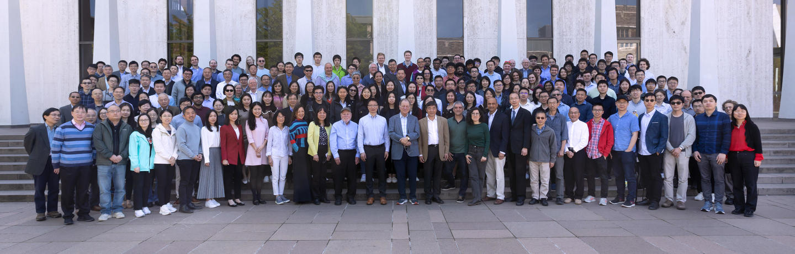

Sponsorship & Support
- Department of Operations Research & Financial Engineering (ORFE), Princeton University
- Department of Statistics, Pennsylvania State University at University Park
- Department of Data Sciences and Operations, University of Southern California (USC)
- Department of Economics, Princeton University
- Department of Mathematics, Imperial College London
- Center for Statistics and Machine Learning (CSML), Princeton University
- Program in Applied and Computational Mathematics (PACM), Princeton University
- Bendheim Center for Finance (BCF), Princeton University
- Center on Contemporary China, Princeton University
- National Science Foundation (NSF)
- Institute of Mathematical Statistics (IMS)
- American Statistical Association (ASA)
- International Chinese Statistical Association (ICSA)
- Two Sigma
- Hudson Bay Capital
- Wizard Capital Research Limited, Hong Kong